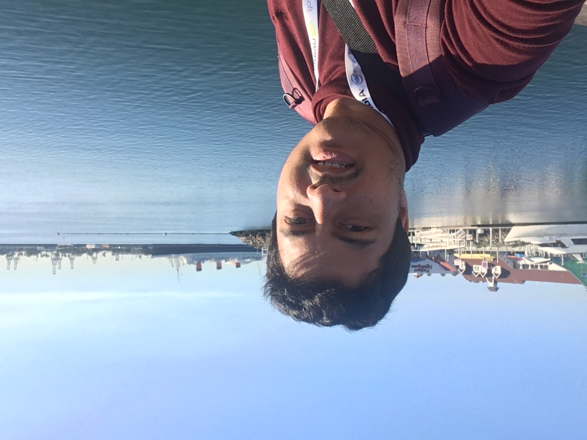

Soumyabrata Pal
University of Massachusetts Amherst |
 |
Currently, I am a Postdoctoral Researcher at Google Research, Bangalore (India). Prior to this, I completed my Ph.D in the Computer Science Department (CICS) at the University of Massachusetts Amherst advised by Dr. Arya Mazumdar. During that time, I was a Visiting Graduate Student at the University of California San Diego from May - November 2021. I had also spent the summer of 2019 as a Research Intern at Ernst & Young AI Lab at Palo Alto and Spring 2020 as an Applied Scientist Intern at Amazon Search (Berkeley). Even earlier, I graduated from Indian Institute of Technology, Kharagpur in August 2016 with a Bachelor's degree in Electronics and Electrical Communication Engineering.
My research interests are Theoretical Machine Learning, Applied Statistics and Information Theory. More concisely, I love Statistical recovery/reconstruction problems under different settings. Most of my work so far can be categorized into four topics namely 1) Latent Variable models - Mixtures of Linear Regression, Linear Classifiers and Distributions 2) Generative models for Graph Clustering - Geometric Block Model 3) Active learning for Semi-supervised clustering - Disjoint Clusters, Overlapping Clusters and Fuzzy Clusters and 4) Statistical models for Collaborative Filtering.
New paper in ALT 2022!! Also started as a postdoc at Google Research!
2 new papers in NeurIPS 2021 and 1 new paper in ITCS !!
Started as a Visiting Graduate Student at UCSD from May 2021!!
New paper accepted in AISTATS 2021!!
Random Subgraph Detection Using Queries
with Wasim Huleihel and Arya Mazumdar
Trace Reconstruction: Generalized and Parameterized
with Akshay Krishnamurthy, Arya Mazumdar and Andrew McGregor
IEEE Transactions on Information Theory, 2021. Preliminary version appeared in European Symposium on Algorithms (ESA), 2019.
Semisupervised Clustering by Queries and Locally Encodable Source Coding
with Arya Mazumdar
IEEE Transactions on Information Theory, 2021. Preliminary version appeared in Advances in Neural Information Processing Systems (NeurIPS), 2017.
By year
On Learning Mixture Models with Sparse Parameters
with Arya Mazumdar
International Conference on Artificial Intelligence and Statistics (AISTATS), 2022.
Lower Bounds on the Total Variation Distance Between Mixtures of Two
Gaussians
with Sami Davies, Arya Mazumdar and Cyrus Rashtchian
Algorithmic Learning Theory (ALT), 2022.
Support Recovery in Universal One-bit Compressed Sensing
with Arya Mazumdar
The 13th Innovations in Theoretical Computer Science (ITCS), 2022
Support Recovery of Sparse Signals from a Mixture of Linear Measurements
with Venkata Gandikota and Arya Mazumdar
Advances in Neural Information Processing Systems (NeurIPS), 2021.
Fuzzy Clustering with Similarity Queries
with Wasim Huleihel and Arya Mazumdar
Advances in Neural Information Processing Systems (NeurIPS), 2021.
Learning User Preferences in Non-Stationary Environments.
with Wasim Huleihel and Ofer Shayevitz
International Conference on Artificial Intelligence and Statistics (AISTATS), 2021.
Recovery of sparse linear classifiers from mixture of responses.
with Venkata Gandikota and Arya Mazumdar
Advances in Neural Information Processing Systems (NeurIPS), 2020.
Recovery of Sparse Signals from a Mixture of Linear Samples
with Arya Mazumdar
International Conference on Machine Learning (ICML), 2020.
High Dimensional Discrete Integration by Hashing and Optimization
with Raj Kumar Maity and Arya Mazumdar
Uncertainty in Artificial Intelligence (UAI), 2020.
Algebraic and Analytic Approaches for Parameter Learning in Mixture Models
with Akshay Krishnamurthy, Arya Mazumdar and Andrew McGregor
Algorithmic Learning Theory (ALT), 2020.
Same-Cluster Querying for Overlapping Clusters
with Wasim Huleihel, Arya Mazumdar and Muriel Medard
Advances in Neural Information Processing Systems (NeurIPS), 2019.
Sample Complexity of Learning Mixture of Sparse Linear Regressions
with Akshay Krishnamurthy, Arya Mazumdar and Andrew McGregor
Advances in Neural Information Processing Systems (NeurIPS), 2019.
Trace Reconstruction: Generalized and Parameterized
with Akshay Krishnamurthy, Arya Mazumdar and Andrew McGregor
European Symposium on Algorithms (ESA), 2019.
Connectivity in Random Annulus Graphs and the Geometric Block Model
with Sainyam Galhotra, Arya Mazumdar and Barna Saha
International Conference on Randomization and Computation (RANDOM), 2019.
The Geometric Block Model
with Sainyam Galhotra, Arya Mazumdar and Barna Saha
The Thirty-Second AAAI Conference on Artificial Intelligence (AAAI), 2018.
Semisupervised Clustering, AND-Queries and Locally Encodable Source Coding
with Arya Mazumdar
Advances in Neural Information Processing Systems (NeurIPS), 2017. Spotlight
By year
The Geometric Block Model
with Sainyam Galhotra, Arya Mazumdar and Barna Saha
NeurIPS 2017 Workshop on Learning on Distributions, Functions, Graphs and Groups, 2017.